Note
Please report bugs, errors or enhancement requests through Issue Tracker or if you have a question about SIRAH open a New Discussion.
This tutorial shows how to visualize and analize trajectory files using the SIRAH Tools plugin for VMD. The main reference for this tutorial is Machado & Pantano. The protein−DNA complex used here is the 3′ Repair Exonuclease 1 (TREX 1, PDB id: 5YWS) and its simulation was previously dicussed by Klein et al.. We strongly advise you to read these articles before starting the tutorial.
Warning
This tutorial requires the use of VMD and AmberTools. Install these applications if you do not already have them. If you need to install any of these applications, visit the following websites for installation instructions and additional information: Install AmberTools and VMD installation guide.
Important
In this tutorial, we will focus on the sirah_vmdtk.tcl plugin. The utilization of the SIRAH Tools scripts cgconv.pl to map AA to CG, and g_top2psf.pl to convert GROMACS’ topologies to PSF files, is covered elsewhere in the documentation. We recommend that you review the other tutorial sections.
Visualization of CG systems
One of the features of the SIRAH Tools plugin for VMD, sirah_vmdtk.tcl, is that it improves the visualization and analysis of SIRAH’s CG trajectories. This plugin sets the correct van der Waals radii, sets the correct coloring code by atom and residue types, and has macros for selecting molecular components on SIRAH trajectories.
After processing the output trajectory to account for the Periodic Boundary Conditions (PBC) (see AMBER, GROMACS or NAMD tutorials for examples of how you can do this), load the processed trajectory and the sirah_vmdtk.tcl file in VMD:
vmd ../5YWS_cg.psf 5YWS_cg_md_pbc.xtc -e ../sirah.ff/tools/sirah_vmdtk.tcl
Tip
You can also load sirah_vmdtk.tcl inside VMD. Go to Extensions > Tk Console and enter:
For AMBER
source ../sirah.amber/tools/sirah_vmdtk.tcl
For GROMACS
source ../sirah.ff/tools/sirah_vmdtk.tcl
With the sirah_vmdtk.tcl file loaded, you can access the sirah_help feature by going to Extensions > Tk Console and entering
sirah_help
The output will be the following:
>>>> sirah_help <<<<
Manual version: 1.2 \[Mar 2026\]
Description:
Command to access the User Manual pages of SIRAH Tools
Usage: sirah_help CommandName
CommandName Function
-----------------------------------------------------------------
sirah_ss Calculate secondary structure in SIRAH proteins
sirah_backmap Backmap coarse-grained to atomistic systems
sirah_restype Set SIRAH residue types
sirah_radii Set SIRAH vdW radii
sirah_macros Set useful selection macros
sirah_help Access User Manual pages
-----------------------------------------------------------------
If sirah_vmdtk.tcl is not loaded in VMD, the trajectory will still be loaded, but the correct bead sizes, residue types, charges, etc. will not be generated (see Figure 1).
{kind=link}
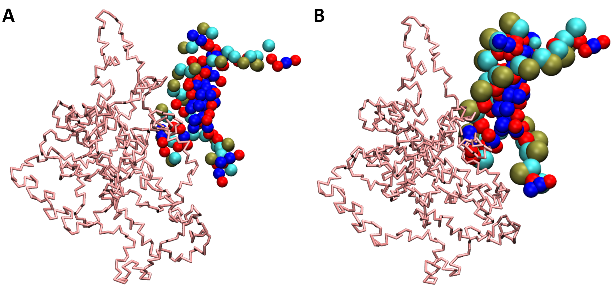
Figure 1. SIRAH CG simulation loaded in VMD. A) The trajectory imported without the sirah_vmdtk.tcl plugin. B) Trajectory imported using the sirah_vmdtk.tcl plugin.
SIRAH macros
In VMD, a macro is a text that represents a selection. Macros are a useful feature of VMD when you use certain selections often. In the SIRAH Tools plugin for VMD, sirah_vmdtk.tcl, 11 macros are available:
sirah_membrane- select only lipid residues;sirah_nucleic- select only acid nucleic residues;sirah_glycan- select only glycan residuessirah_protein- select only protein residues;sirah_basic- select only basic amino acid residues;sirah_acidic- select only acidic amino acid residues;sirah_polar- select only polar amino acid residues;sirah_neutral- select only neutral amino acid residues;sirah_backbone- select the backbone beads of protein (GN, GC, and GO) and acid nucleic (PX, C5X, and O3’);sirah_water- select all solvent available in the force field (WT4 and WLS);sirah_ions- select all ions available in the force field (KW, NaW, ClW, MgX, CaX, and ZnX).
To use any SIRAH macro, go to Graphics > Representations (See Figure 2) and click on the Create Rep button. In the Selected Atoms box, erase the text that appears there and type any of the available macros above.
{kind=link}
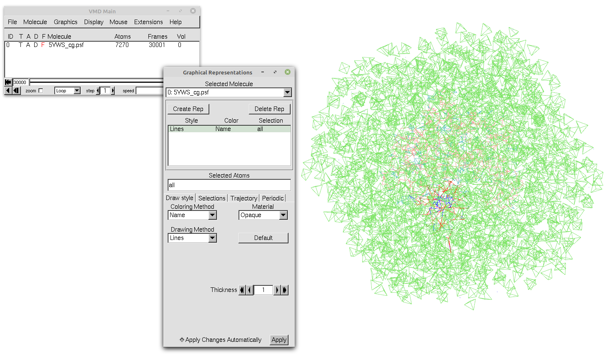
Figure 2. Our trajectory loaded in VMD with the default representation and without any selection.
Tip
To see all available VMD’s Singlewords, click on the Selections tab in the Graphics > Representations window and look through the Singlewords panel. You can also double-click on a singleword, and then, click on the Apply button to use a VMD Macro.
Since our system is a protein−DNA complex with coordinating magnesium ions, you can use four macros: sirah_protein (see Figure 3A), sirah_nucleic (see Figure 3B), sirah_water (see Figure 3C), and sirah_ions (see Figure 3D).
{kind=link}
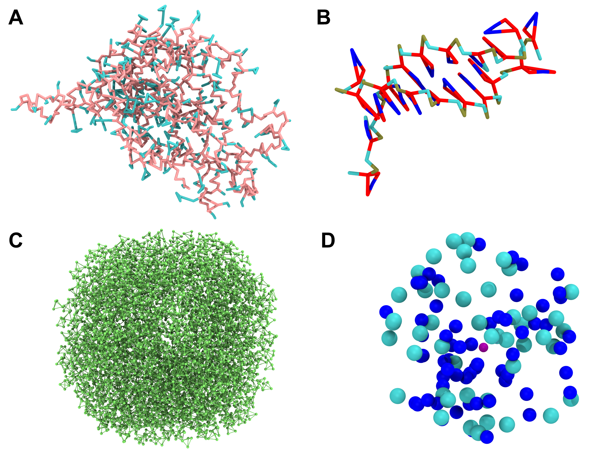
Figure 3. Each of the macros of our systems shown as a single image. A) The sirah_protein macro using Licorice as Drawing Method. The backbone beads of the protein are pink, and the sidechains ones are blue when using the Coloring Method Name. B) The sirah_nucleic macro using the Licorice as Drawing Method. For the DNA, the backbone beads PX, C5X, and O3’ are colored dark yellow, cyan, and red, respectively, and the sidechain ones are colored red and blue using the Coloring Method Name. C) The sirah_water macro using the CPK as Drawing Method. In this system, only WT4 was used and is colored green by the Coloring Method Name. D) The sirah_ions macro using the VDW as Drawing Method. The ClW, NaW, and MgW ions are colored cyan, blue, and purple, respectively, when using the Coloring Method Name.
To use all representations together, just create different representations for each one (clicking on the Create Rep button in the Graphics > Representations window). Your protein-DNA complex should now look similar to the one in Figure 4.
{kind=link}
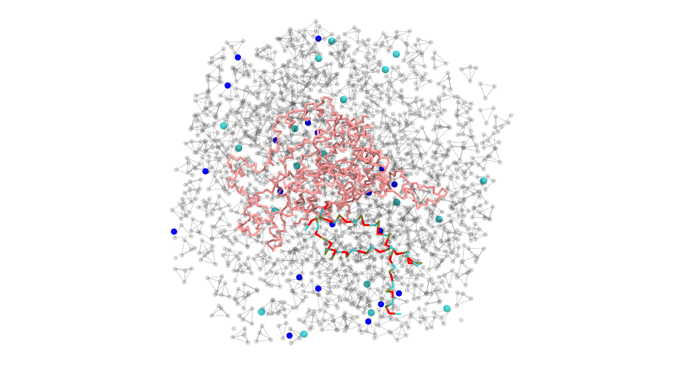
Figure 4. Our protein-DNA complex after using the SIRAH macros sirah_backbone, sirah_water, and sirah_ions. To improve visualization, we used Licorice as Drawing Method for sirah_backbone and CPK for sirah_water and sirah_ions. In addition, the Material of the water beads was changed to Ghost and we hid some elements of the system.
Tip
As you can see, macros can be very useful and when saving your work in a saved state (File > Save Visualization State), macros are included in the saved state file to be used later (File > Load Visualization State).
Structural analysis of CG systems
Besides the features that enhance the visualization of SIRAH CG simulations, two additional SIRAH Tools features can be used to analyze the trajectory: sirah_ss and sirah_backmap. They will be discussed below.
Secondary structure analysis
The utility sirah_ss assigns secondary structures to CG proteins in SIRAH, classifying residues into α-helix (H), extended β-sheet (E) or, otherwise, coil (C) conformations, based on the instantaneous values of the backbone’s torsional angles and Hydrogen bond-like (HB) interactions (see Machado & Pantano for more information). The sirah_ss feature produces ASCII files of average and by-frame results, which can be visualized as color plots using the python script plot_ss.py.
With the sirah_vmdtk.tcl file loaded, you can access the sirah_help feature by going to Extensions > Tk Console and entering
sirah_help
to see all the SIRAH tools available options. Or, you can go straight to the help for the sirah_ss feature by typing
sirah_ss help
The output will be the following:
>>>> sirah_ss <<<<
version: 1.1 [Dec 2015]
Description:
Command to calculate the secondary structure of SIRAH proteins.
If mol is omitted then all options are applied to top molecule.
By default, the secondary structure data is stored in memory
as the array sscache_data(mol,frame) and the coloring method
'Secondary Structure' will display correctly. By default, the
script reads the sscache_data if available in memory and does
not recalculate the conformation, unless flag ramach is set or
the sscache_data is cleaned. The outname and noprint keywords
control the generated output files.
The current command version does not support PBC options.
Usage: sirah_ss [options]
Options: These are the optional arguments
mol Set the molecule ID, default top
first First frame to analyze
last Last frame to analyze
sel "VMD selection", default "all"
outname List {} of keywords and names for output files.
Keywords and default names:
byframe ss_by_frame.xvg
byres ss_by_res.xvg
global ss_global.xvg
mtx ss.mtx
phi phi.mtx
psi psi.mtx
load Load secondary structure data from file (e.g ss.mtx) into molecule (mol)
noprint Flag to avoid printing standard results to out files
ramach Flag to write phi and psi angles of residue selection (sel) to out files
nocahe Flag to avoid saving data to sscache_data
now Flag to calculate the secondary structure at current frame.
No sscache_data or output file is saved.
clean Flag to clean the sscache_data of the selected molecule (mol) and exit
help Display help and exit
Examples:
1. Load secondary structure data into molecules 2 and extend the calculation
sirah_ss mol 2 load ss.mtx
sirah_ss mol 2
2. Set custom output file names
sirah_ss outname {mtx myss.mtx byframe myss_by_frame.xvg}
All the available options for sirah_ss are documented in this help. By default, four outputs are created by sirah_ss: ss_by_frame.xvg, ss_by_res.xvg, ss_global.xvg and ss.mtx. The ss_by_frame.xvg file gives the secondary structure percentages of the three classifications (H, E, or C) by each frame of the simulations. The ss_by_res.xvg file gives the secondary structure percentages of H, E, and C by each residue. The ss_global.xvg file shows the overall percentages and standard deviation of H, E, and C of the entire simulation. And the ss.mtx file gives a matrix of the secondary structure transitions, between H, E, or C, of the residues versus the simulation time.
You can also choose which molecule and which frames to analyze. To calculate the secondary structure for the protein (loaded on top) on all frames, for instance, you must modify the default sirah_ss selection from all to sirah_protein. To achieve this, you can enter:
sirah_ss sel "sirah_protein"
This will, by default, calculate the secondary structure for all frames of the trajectory of our selection and generate the four files.
Furthermore, we have prepared a python script plot_ss.py that can be used to plot three of the four files (ss_by_frame.xvg, ss_by_res.xvg and ss.mtx).
Important
The plot_ss.py script works properly with Python 3.9. You can for example create a conda environment using:
conda create --name plot_ss python=3.9
and activate it using:
conda activate plot_ss
Finally check de python version:
python --version
Once you know you are using the right version of Python, you can use the plot_ss.py script by typing:
python ../sirah.ff/tools/plot_ss.py -h
or
python ../sirah.amber/tools/plot_ss.py -h
This will show us the options you have within the script, most of the flags are for changing the appearance of the graph (colors, font size, label size, etc).
Create a PNG image from an input file (ss.mtx, ss_by_frame.xvg, or ss_by_res.xvg) generated by SIRAH.
optional arguments:
-h, --help Show this help message and exit
-i [input] Input file name (ss.mtx, ss_by_frame.xvg, ss_by_res.xvg)
-d [dpi] DPI (dots per inch) for saving the figure (default: 300)
-tu [tu] Time unit (us or ns) (default: us)
-dt [dt] Time between consecutive frames (default: 1e-04)
-H [helix-color] Alpha-helix color (default: darkviolet)
-E [beta-sheet color] Beta-sheet color (default: yellow)
-C [coil color] Coil color (default: aqua)
-o [out name] Image output name (default: input name)
-wt [width] Image width (inches) (default: 10)
-ht [height] Image height (inches) (default: 8)
-xfs [xlab fontsize] Fontsize for x-axis labels (default: 14)
-yfs [ylab fontsize] Fontsize for y-axis labels (default: 14)
-yticks [y # ticks] Number of major tick locators on the y-axis (default: 10)
-xticks [x # ticks] Number of major tick locators on the x-axis (default: 10)
-xtsize [xtsize] Size of ticks on the x-axis (default: 12)
-ytsize [ytsize] Size of ticks on the y-axis (default: 12)
-title [title] Title of the plot (default: None)
-ttsize [title_size] Size of the plot title (default: 16)
--version Print version and exit
The basic use of the script is:
python ../sirah.ff/tools/plot_ss.py -i filename
or
python ../sirah.amber/tools/plot_ss.py -i filename
where filename is one of the files ss_by_res.xvg, ss_by_frame.xvg or ss.mtx.
In the case of the ss.mtx matrix it may take some time (no more than a couple of minutes), so be patient.
Tip
To use the flags that modify the colors, any of the following entries is valid. For example, if you would like to use red as the color for the α-helix, you can type:
-H red
-H r
-H "red"
-H "r"
-H "#FF0000"
In the case of HEX code usage, quotation marks are required.
The script generates the plots shown in Figure 5, remember that you must plot one by one, selecting the filename according to your interest.
{kind=link}
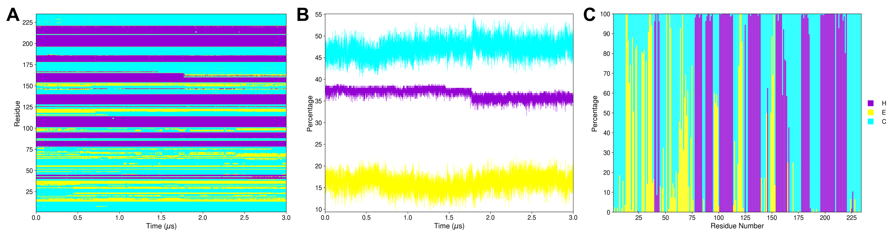
Figure 5. Outcomes of plot_ss.py where the secondary structural elements α-helix (H), extended β-sheet (E), and coil (C) are colored purple, yellow, and blue, respectively. A) The ss.mtx matrix plot shows the protein’s secondary structure transitions during the 3.0 μs MD simulation. B) The ss_by_frame.xvg plot shows the three secondary structure elements (H, E, and C) percentages by each frame of the 3.0 μs MD simulation. C) The ss_by_res.xvg plot shows the three secondary structure elements (H, E, and C) percentages by each residue during the 3.0 μs MD simulation. Here, we put the three plots together and edited the figure to use only one legend. However, the script makes three separate plots, each with its own legend.
Backmapping analysis
The utility sirah_backmap initially retrieves pseudo-atomistic information from the CG model. The atomistic positions are built on a by-residue basis following the geometrical reconstruction (internal coordinates) proposed by Parsons et al.. Bond distances and angles are derived from rough organic chemistry considerations stored in backmapping libraries. Next, the structures from the initial stage are protonated and minimized with the atomistic force field ff14SB within the tleap module of AmberTools.
Important
By default, sirah_backmap minimizes the structures after the backmapping procedure. AmberTools is used to accomplish the minimization task. Make sure AmberTools and the $AMBERHOME environment are set up properly. If you are using AmberTools via conda, AmberTools environment should be activated before opening VMD.
However, the nomin option can be used to disable the minimization step. Consequently, you can minimize backmapped outputs by utilizing other software/force fields outside of VMD. Keep in mind that hydrogen atoms won’t be added to the structures if the minimization step is skipped.
With the sirah_vmdtk.tcl file loaded, you can access the sirah_help feature by going to Extensions > Tk Console and entering
sirah_help
to see all the SIRAH tools available options. Or, you can go straight to the help for the sirah_backmap feature by typing
sirah_backmap help
The output will be the following:
>>>> sirah_backmap <<<<
version: 2.0 \[Mar 2026\]
Description:
Command to recover atomistic information from coarse-grained or multiscale
systems.
Geometric operations are applied to reconstruct the atomic coordinates then
a minimization is performed to refine the structure of the system.
The minimization requires AMBERTOOLS 22 (free at http://ambermd.org/)
or later properly installed. MPI option requires mpirun and parallel
compilation of AMBER code. Be aware that small systems may fail to run or
converge in parallel execution due to decomposition problems. Notice, the
cuda version requires installing the AMBER licensed suite.
By default the ff14SB force field is used for the atomistic refinement,
any residue or unit not defined within it will generate an execution error.
However, some non-standard topologies are provided with AMBERTOOLS, in the
AAparams folder. Additionally, users can add their own topologies to be
read using the flag customdir. The minimization protocol consists on
100+50 steps of steepest descent and conjugate gradient in vacuum conditions
with a 0.12 nm cut-off for electrostatic.
The current command version does not support PBC options, so make sure the
molecules are whole before running the backmap.
Usage: sirah_backmap [options]
Options: These are the optional arguments
mol Set the molecule ID, default top.
now Backmap the current frame.
first First frame to process.
last Last frame to process.
each Process frames each number of steps, default 1.
frames List of frames to process, e.g. {1 2 10 21 22 23 30}.
outname Root names for output PDB file.
noload Flag to avoid loading the atomistic trajectory to the VMD session.
nomin Flag to avoid minimizing the system.
lipid Flag to perform lipid backmapping.
mpi MPI processes to use during minimization, default 1.
cuda Flag to use pmemd.cuda, sets gbsa on, cutoff to 999 and no MPI.
gbsa Flag to use implicit solvation GBSA (igb=1), default off (igb=0).
cutoff Set cut-off value (in angstroms) for non-bonded interactions, default 12.
maxcyc Set total number of minimization steps, default 150.
ncyc Set the initial number of steepest descent steps, default 100.
customdir Set a custom directory to the AAPetiteSirah non-standard amber topologies.
help Display help and exit.
Examples:
1. Backmap one every 100 frames of molecule 2, only solute
sirah_backmap each 100 mol 2
2. Backmap current frame of molecule 3, including lipids and
extending minimization steps to improve convergency
sirah_backmap now mol 3 lipid maxcyc 250 ncyc 200
3. Backmap current frame of top molecule, including non-standard
amber topologies with a user defined path
sirah_backmap now customdir /home/yourpath/sirah.amber/AAparams
Note
Currently, backmapping libraries contain instructions for solute (proteins, DNA, lipids, metal ions, nucleotides (ATP, ADP, AMP, GDP, GTP, cAMP, and cGMP), and some non-standard Amino Acids available in SIRAH).
Important
The latest version of sirah_vmdtk.tcl (March 2026) introduces two new flags: lipid and customdir.
The lipid flag enables backmapping of lipid molecules. To use it, you’ll need AMBERTOOLS 22 or later installed, since the process relies on the Lipid21 force field.
The customdir flag was designed to make it easier to include new molecules in the backmapping workflow, following the Petite SIRAH implementation. Petite SIRAH is still in its early stages, but starting from AMBERTOOLS 26, a few non-standard topologies are already available for backmapping, such as nucleotides and non-standard amino acids. In this case, the file $env(AMBERHOME)/dat/SIRAH/AAparams/leaprc.AApetitesirah will be used automatically to handle those topologies.
If you’ve created your own molecules and added them to leaprc.AApetitesirah, you can point to your custom directory (e.g., /home/yourpath/sirah.amber/AAparams) using the customdir flag, so your new molecules can be included in the backmapping routine without any extra hassle. You need to use the absolute path, meaning the complete and exact location of the directory starting from the root directory (/) to the flag.
All the available options for sirah_backmap are documented in this help. By default, all trajectory frames are used. Due to the fact that our protein-DNA complex is a 3.0 μs MD simulation with 30,000 frames, processing the entire trajectory could take some time. Thus, we chose to analyze the trajectory by extracting one frame every 1,000 frames with the each option. To do that you type:
sirah_backmap each 1000
The output is a 300-frame file named backmap.pdb. This file is displayed as an animated GIF in Figure 6.

Figure 6. The 300-frame backmapped all-atom output from the 3.0 μs MD simulation using the default minimization arguments of sirah_backmap.
Warning
Always check both the original CG trajectory and the backmapping output to identify out-of-the-ordinary behavior and adjust arguments accordingly.
Keep in mind that the minimized structures sometimes may differ from the CG trajectory due to the combination of all-atom minimization algorithms, number of cycles, cutoffs, etc.
An example of this behavior is explained below.
The original atomistic PDB file shows that a few nucleotides at the DNA molecule’s extremities are unpaired, allowing them to interact with neighboring molecules. Since we used this original PDB file to generate our CG representation, we anticipated that the unpaired nucleotides would exhibit a flexible behavior. However, in the backmapped PDB file, you can observe that the DNA extremities undergo unusual deformations and movements. These events are not observed in the CG simulation, as shown in Figure 7.

Figure 7. The same 300-frame trajectory from the 3.0 μs MD simulation in CG representation does not show the unreal behavior at the DNA extremities.
In most cases, the default parameters of 100 steps of steepest descent (ncyc) and 50 steps of conjugate gradient (total of 150 maxcyc steps) in vacuum conditions are sufficient to produce a correct result. However, in this instance, they produced artifactual conformations that were absent in the CG simulation. To solve this, you can modify the total minimization steps to 50 for maxcyc and to 25 for ncyc as follows:
Caution
Return the original CG trajectory’s top status in VMD prior to typing the command.
sirah_backmap each 1000 maxcyc 50 ncyc 25
The output is a new 300-frame file named backmap.pdb, displayed as an animated GIF in Figure 8, exhibiting a similar behavior to the CG representation simulation.

Figure 8. The final 300-frame backmapped output from the 3.0 μs MD simulation using less minimization steps by modifying the maxcyc and ncyc arguments of sirah_backmap.
It is important to try different combinations of settings to find the one that works best for your system. To keep the backmapped files, you can always change the output name with the outname option:
sirah_backmap each 1000 maxcyc 50 ncyc 25 outname backmap_less_min.pdb
VMD in text mode
If you need to perform non-interactive analysis on large trajectories or if a graphical user interface is not available, you can also execute the SIRAH Tools plugin using VMD text mode. When in text mode, VMD does not provide a window for graphical output, but many of its features are available. To launch VMD in text mode, the -dispdev text and -f flags are appended to the command line used before to load the trajectory, as shown below:
vmd -dispdev text -f ../5YWS_cg.psf 5YWS_cg_md_pbc.xtc -e ../sirah.ff/tools/sirah_vmdtk.tcl
The output will be similar to the following:
Info) VMD for LINUXAMD64, version 1.9.3 (November 30, 2016)
Info) http://www.ks.uiuc.edu/Research/vmd/
Info) Email questions and bug reports to vmd@ks.uiuc.edu
Info) Please include this reference in published work using VMD:
Info) Humphrey, W., Dalke, A. and Schulten, K., `VMD - Visual
Info) Molecular Dynamics', J. Molec. Graphics 1996, 14.1, 33-38.
Info) -------------------------------------------------------------
Info) Multithreading available, 12 CPUs detected.
Info) CPU features: SSE2 AVX AVX2 FMA
Info) Free system memory: 58GB (93%)
Info) File loading in progress, please wait.
Info) Using plugin psf for structure file 5YWS_cg.psf
psfplugin) WARNING: no impropers defined in PSF file.
psfplugin) no cross-terms defined in PSF file.
Info) Analyzing structure ...
Info) Atoms: 7270
Info) Bonds: 10237
Info) Angles: 4791 Dihedrals: 3727 Impropers: 0 Cross-terms: 0
Info) Bondtypes: 0 Angletypes: 0 Dihedraltypes: 0 Impropertypes: 0
Info) Residues: 1843
Info) Waters: 0
Info) Segments: 4
Info) Fragments: 1592 Protein: 0 Nucleic: 0
Info) Using plugin xtc for coordinates from file 5YWS_cg_md_pbc.xtc
Info) Coordinate I/O rate 1564.4 frames/sec, 129 MB/sec, 19.2 sec
Info) Finished with coordinate file 5YWS_cg_md1_pbc.xtc.
SIRAH radii were set
SIRAH selection macros were set
SIRAH coloring mothods were set
SIRAH Tool kit for VMD was loaded. Use sirah_help to access the User Manual pages
vmd >
The final lines indicate that SIRAH Tools were loaded correctly. Thus, in the vmd > prompt, for instance, you can type sirah_help:
vmd > sirah_help
In this mode, the sirah_ss and sirah_backmap features can also be utilized. For example, if you want to calculate the secondary structure for the protein (loaded on top) on all frames, you type:
vmd > sirah_ss sel "sirah_protein"
0 25 50 75 100 %
Progress |||||||||||||||||||||
Starting sscache... Done!
SUMMARY: <H> 36.8% <E> 16.2% <C> 47.1%
Additionally, you can construct customized scripts, that contain vmd commands, to load and process your trajectories with SIRAH Tools in VMD text mode. For example, you can create a sirah_dispdev.tcl file:
# vmd_commands.tcl
mol new 5YWS_cg.psf
mol addfile 5YWS_cg_md_pbc.xtc waitfor all
source sirah.ff/tools/sirah_vmdtk.tcl
sirah_ss
sirah_backmap now nomin outname last_frame_backmap
quit
This script will load the topology 5YWS_cg.psf, the trajectory 5YWS_cg_md_pbc.xtc, and sirah_vmdtk.tcl files. Then, process secondary structure with sirah_ss and create a backmapped pdb of the last frame with sirah_backmap with the name last_frame_backmap.pdb. With the quit command, VMD is closed. To read the script, you type:
vmd -dispdev text -e sirah_dispdev.tcl
Basic analyses
This tutorial shows how to perform Root Mean Square Deviation (RMSD), Root Mean Square Fluctuation (RMSF), Radius of gyration (Rg), and Solvent-Accessible Surface Area (SASA) analyses on a SIRAH CG simulation trajectory file using VMD. The protein−DNA complex used here is the 3′ Repair Exonuclease 1 (TREX 1, PDB id: 5YWS) and its simulation was previously dicussed by Klein et al. (check the SIRAH Tools tutorial for additional analyses on this system). We strongly advise you to read the article before starting the tutorial.
Since VMD is a powerful molecular visualization software, you may find it convenient and familiar to perform trajectory analysis directly in VMD. In the following sections, we will concentrate on the practical side of these analyses in VMD and will not delve into the theory.
Warning
This tutorial requires the use of VMD and Xmgrace. Install these applications if you do not already have them. If you need to install these application, visit the following websites for installation instructions and additional information: VMD installation guide and Xmgrace installation guide.
Important
In this tutorial, we used VMD version 1.9.4. A few details may vary depending on the software version and operating system.
Loading the Trajectory
After processing the output trajectory to account for the Periodic Boundary Conditions (PBC) (see AMBER, GROMACS or NAMD tutorials for examples of how you can do this), load the processed trajectory and the sirah_vmdtk.tcl file in VMD:
vmd ../5YWS_cg.psf 5YWS_cg_md_pbc.xtc -e ../sirah.ff/tools/sirah_vmdtk.tcl
Tip
You can also load sirah_vmdtk.tcl inside VMD. Go to Extensions > Tk Console and enter:
For AMBER
source ../sirah.amber/tools/sirah_vmdtk.tcl
For GROMACS
source ../sirah.ff/tools/sirah_vmdtk.tcl
Attention
The file sirah_vmdtk.tcl is a Tcl script that is part of SIRAH Tools and contains the macros to properly visualize the coarse-grained structures in VMD. These macros will facilite our atom selection within VMD. You can go to the SIRAH Tools tutorial to learn more about the macros.
That’s it! Now you can analyze the trajectory.
RMSD
The Root Mean Square Deviation (RMSD) is one of the most common analyses performed when analyzing a MD trajectory. Without delving into the theoretical aspects, it can be stated that the RMSD serves as a metric for assessing the degree of structural resemblance across different molecular conformations within a given system along a trajectory.
To perform this analysis you can take advantage of the RMSD Visualizer Tool, a built-in plugin in VMD designed to compute RMSD, or using a Tcl script.
Note
Similarly to the RMSD Visualizer Tool, the RMSD Trajectory Tool plugin is also available in VMD. However, their user interfaces vary, so the steps outlined here in this tutorial may not be applicable to the RMSD Trajectory Tool.
1.1 RMSD Visualizer Tool
Once your trajectory is loaded, go to Extensions > Analysis > RMSD Visualizer Tool. It will open the interface dedicated to RMSD analysis.
In the RMSD Visualizer Tool interface, select Top in the Molecule selection. To analyze the protein backbone, enter sirah_backbone and sirah_protein in the Atom selection box (see Figure 1A).
Tip
If you wish to focus on a specific bead, you can enter their name in the Atom selection box. For example, if you want something similar to a “carbon alpha” RMSD, you can type name GC.
Click on the ALIGN button.
This will superimpose each frame of the trajectory to the reference frame (in this case the first frame, frame 0) based on the selected groups of atoms to minimize RMSD. This step is not required but is recommended to display only the differences that arise from structure fluctuations and not from the displacements and rotations of the molecule as a whole.
Note
Since the VMD default Reference selection (Molecule ID: self and Frame: 0) was used, all the atoms of the selected molecule will be rotated and translated to fit the structure of the trajectory first frame (frame number 0). But you can modify this by setting a reference molecule. It is important to remember, when doing an alignment using another molecule as the reference, the selections for both molecules need to have the exact same number of atoms.
With all the necessary settings in place, click on the RMSD button. The tool will perform the analysis, computing the RMSD values for the selected region over the trajectory. After the calculation is complete, click on the Plot result button and a new window will open with a plot showcasing the computed RMSD versus frames (see Figure 1B).
{kind=link}
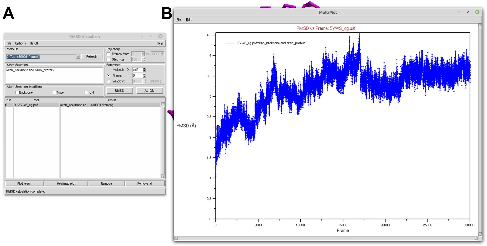
Figure 1. Protein RMSD of a SIRAH CG simulation using the RMSD Visualizer Tool of VMD. A) RMSD Visualizer Tool options used to perfom RMSD. B) The result RMSD vs Frame of the sirah_backbone and sirah_protein selection.
Tip
If your trajectory is too big, you can change the Step size parameter in the Trajectory section to skip frames. However, alignment does not accept a Step size.
Now, let’s calculate the RMSD for the DNA molecule. In the Atom selection box, type in sirah_backbone and sirah_nucleic. Then, click on the ALIGN button and then on the RMSD button. A new RMSD line will appear in the results box (see Figure 2A). Select it and click on the Plot result button to open the RMSD versus frame plot window (see Figure 2B).
Note
Before calculating RMSD, alignment must be performed if you wish to display only differences resulting from structure fluctuations for your new selection.
{kind=link}
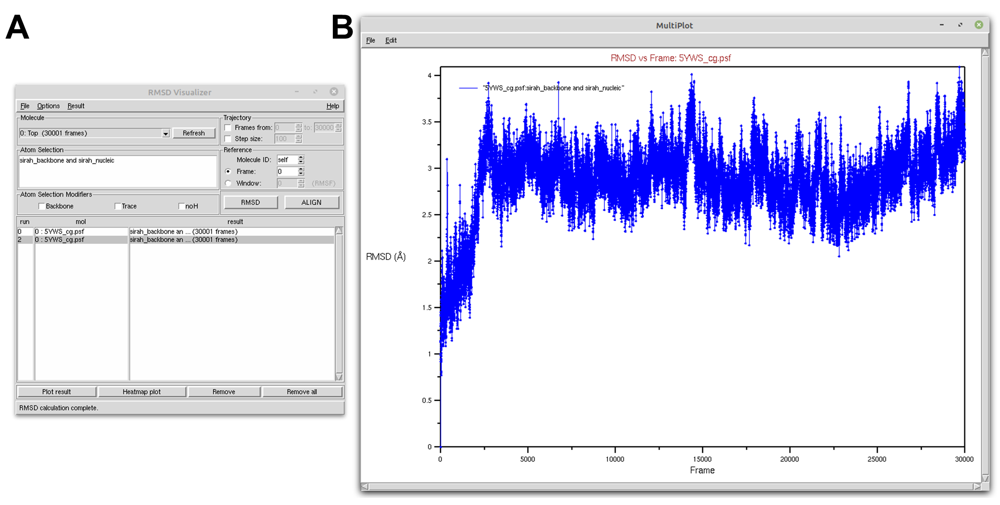
Figure 2. DNA RMSD of a SIRAH CG simulation using the RMSD Visualizer Tool of VMD. A) RMSD Visualizer Tool options used to perfom RMSD. B) The result RMSD vs Frame of the sirah_backbone and sirah_nucleic selection.
With the RMSD Visualizer Tool, you can also choose to plot the RMSD of both protein and DNA in the same window by selecting both calculations and clicking on the Plot result button (see Figure 3).
{kind=link}
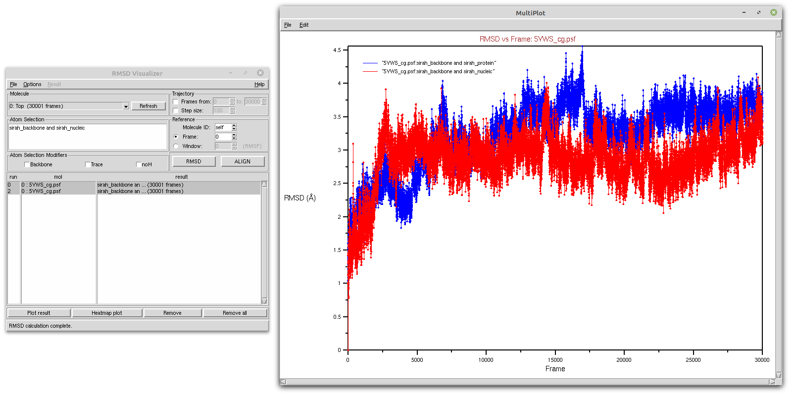
Figure 3. Protein (blue) and DNA (red) RMSD of a SIRAH CG simulation using the RMSD Visualizer Tool of VMD.
Tip
If you prefer to use external plotting programs, you can save the data in a text file (on the plot window go to File > Export to Xmgrace or File > Export to ASCII vectors) and then import the data into your preferred plotting software.
1.2. Tcl script
The same actions can be taken on the scripting level using the Tk Console. Thus, you can create a rmsd_protein.tcl file to calculate RMSD of the protein and output a text file rmsd_prot.dat:
#set output file name
set outfile [open rmsd_prot.dat w];
#set reference as the first frame using protein backbone as selection
set reference [atomselect top "sirah_backbone and sirah_protein" frame 0]
#set trajectory selection also as the protein backbone
set compare [atomselect top "sirah_backbone and sirah_protein"]
#get the number of frames
set N [molinfo top get numframes]
#calculate RMSD for all frames
for {set i 0} {$i < $N} {incr i} {
#get the correct frame
$compare frame $i
#do the alignment
$compare move [measure fit $compare $reference]
#compute the RMSD
set rmsd [measure rmsd $compare $reference]
#print the RMSD in the output file
puts $outfile "$i \t $rmsd"
}
close $outfile
With the rmsd_protein.tcl file in your work directory, go to Extensions > Tk Console and enter:
source rmsd_protein.tcl
You can use Xmgrace to plot the result:
xmgrace rmsd_prot.dat
You can create a rmsd_nucleic.tcl file by changing the following lines:
set outfile [open rmsd_prot.dat w]toset outfile [open rmsd_nucl.dat w];set reference [atomselect top "sirah_backbone and sirah_protein" frame 0]toset reference [atomselect top "sirah_backbone and sirah_nucleic" frame 0];set compare [atomselect top "sirah_backbone and sirah_protein"]toset compare [atomselect top "sirah_backbone and sirah_nucleic"].
You can use Xmgrace to plot the results:
xmgrace rmsd_prot.dat rmsd_nucl.dat
Tip
The files rmsd_prot.dat and rmsd_nucl.dat are compatible with external plotting programs.
RMSF
The Root Mean Square Fluctuation (RMSF) of a structure is the time average of the RMSD per residue. In contrast to the RMSD, which quantifies how much a structure deviates from a reference over time, the RMSF can disclose which system components are the most mobile. To perform this analysis, you will use a Tcl script directly within the Tk Console.
Thus, you can create a rmsf_protein.tcl file to calculate RMSF of the protein and output a text file rmsf_prot.dat:
#set output file name
set outfile [open rmsf_prot.dat w];
#set reference and selection of protein
set reference [atomselect top "sirah_protein and name GC" frame 0]
set sel [atomselect top "sirah_protein and name GC"]
#get the number of frames
set N [molinfo top get numframes]
#do the alignment
for {set i 0} {$i < $N} {incr i} {
#get the correct frame
$sel frame $i
#do the alignment
$sel move [measure fit $sel $reference]
}
#calculate rmsf for all trajectory frames
set rmsf [measure rmsf $sel first 0 last -1 step 1]
#print to file the rmsf by residue
for {set i 0} {$i < [$sel num]} {incr i} {
puts $outfile "[expr {$i+1}] [lindex $rmsf $i]"
}
close $outfile
Tip
If your trajectory is too big, you can change the step parameter in the set rmsf [measure rmsf $sel first 0 last -1 step 1] line to skip frames. You can also change first and last parameters if you have a frame range.
With the rmsf_protein.tcl file in your work directory, go to Extensions > Tk Console and enter:
source rmsf_protein.tcl
You can plot the result using Xmgrace, and a plot similar to Figure 4 will appear:
xmgrace rmsf_prot.dat
{kind=link}
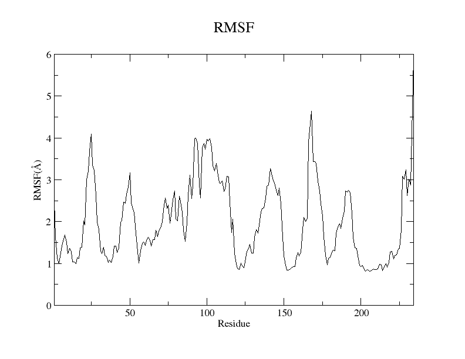
Figure 4. RMSF plot of the GC beads of the protein residues from the SIRAH CG simulation using the Xmgrace program.
For the DNA, you can create a rmsf_nucleic.tcl file to calculate the RMSF per strand:
#set output file name
set outfile_strand1 [open rmsf_DNA_strand1_tcl.dat w];
set outfile_strand2 [open rmsf_DNA_strand2_tcl.dat w];
#set reference and selection the DNA
set reference [atomselect top "residue 234 to 253 and name C5X" frame 0]
set sel [atomselect top "residue 234 to 253 and name C5X"]
#get the number of frames
set N [molinfo top get numframes]
#do the alignment
for {set i 0} {$i < $N} {incr i} {
# get the correct frame
$sel frame $i
#do the alignment
$sel move [measure fit $sel $reference]
}
set strand1 [atomselect top "residue 234 to 243 and name C5X"]
set strand2 [atomselect top "residue 244 to 253 and name C5X"]
#calculate rmsf for all trajectory frames
set rmsf_strand1 [measure rmsf $strand1 first 0 last -1 step 1]
set rmsf_strand2 [measure rmsf $strand2 first 0 last -1 step 1]
#print to file the rmsf for strand 1
for {set i 0} {$i < [$strand1 num]} {incr i} {
puts $outfile_strand1 "[expr {$i+1}] [lindex $rmsf_strand1 $i]"
}
close $outfile_strand1
#print to file the rmsf for strand 2
for {set i 0} {$i < [$strand2 num]} {incr i} {
puts $outfile_strand2 "[expr {$i+1}] [lindex $rmsf_strand2 $i]"
}
close $outfile_strand2
With the rmsf_nucleic.tcl file in your work directory, go to Extensions > Tk Console and enter:
source rmsf_nucleic.tcl
Two files will be created rmsf_nucl_strand1.dat and rmsf_nucl_strand2.dat. You can plot them using Xmgrace, and a plot similar to Figure 5 will appear:
xmgrace rmsf_nucl_strand1.dat rmsf_nucl_strand2.dat
{kind=link}
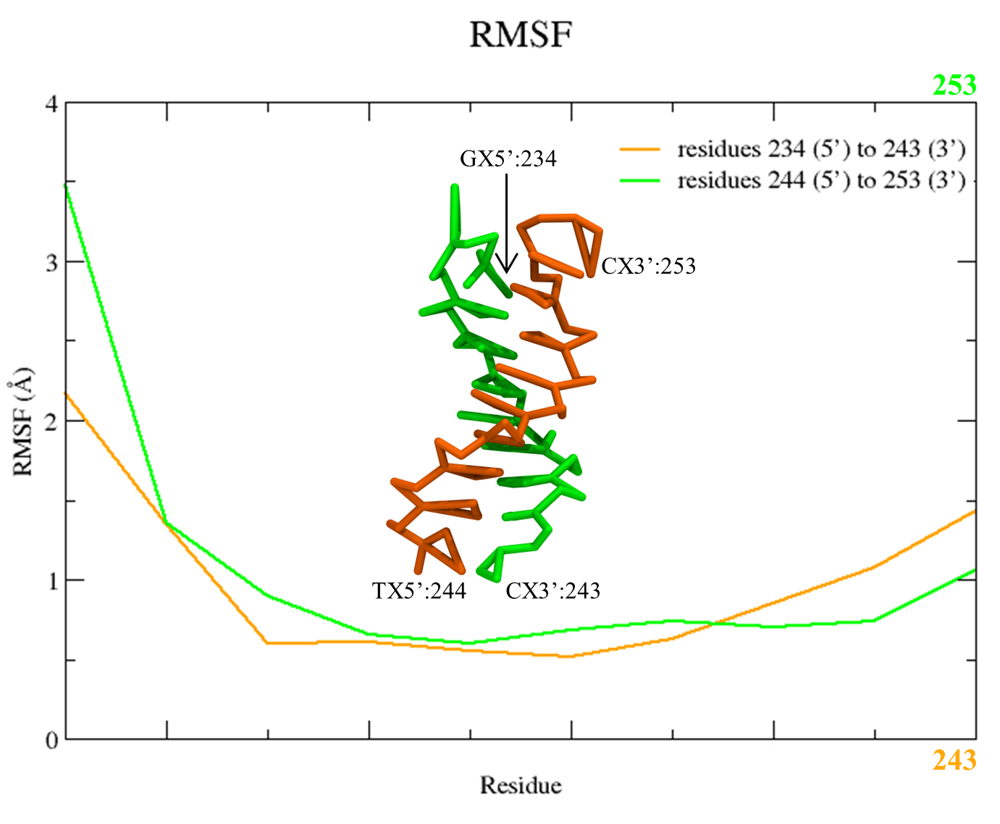
Figure 5. RMSF plot of the C5X beads of the two DNA stands from the SIRAH CG simulation using the Xmgrace program.
Note
The name GC and name C5X would be the bead selection similar to a “carbon alpha” for protein and DNA, respectively.
Tip
The files rmsf_prot.dat, rmsf_nucl_strand1.dat, and rmsf_nucl_strand2.dat are compatible with external plotting programs.
Radius of gyration
The Radius of gyration (Rg) is a metric that quantifies the spatial extent of a protein by measuring the distance between its center of mass and its termini. The metric offers an indicator of the degree of compactness in the protein structure. To perform this analysis, you will use a Tcl script directly within the Tk Console.
Thus, you can create a rgyr.tcl file to calculate Rg of the protein and output a text file rgyr_protein.dat:
#set output file name
set output [open "rgyr_protein.dat" w]
#set protein selection
set sel [atomselect top "sirah_protein"]
#get the number of frames
set n [molinfo top get numframes]
#rgyr calculation loop
for {set i 0} {$i < $n} {incr i} {
#get the correct frame
molinfo top set frame $i
#calculate radius of gyration for the frame
set rgyr [measure rgyr $sel]
puts "\t \t progress: $i/$n"
#print to file the rgyr
puts $output "$rgyr"
}
puts "\t \t progress: $n/$n"
puts "Done."
close $output
With the rgyr.tcl file in your work directory, go to Extensions > Tk Console and enter:
source rgyr.tcl
You can plot the result using Xmgrace, and a plot similar to Figure 6 will appear:
xmgrace rgyr_protein.dat
{kind=link}
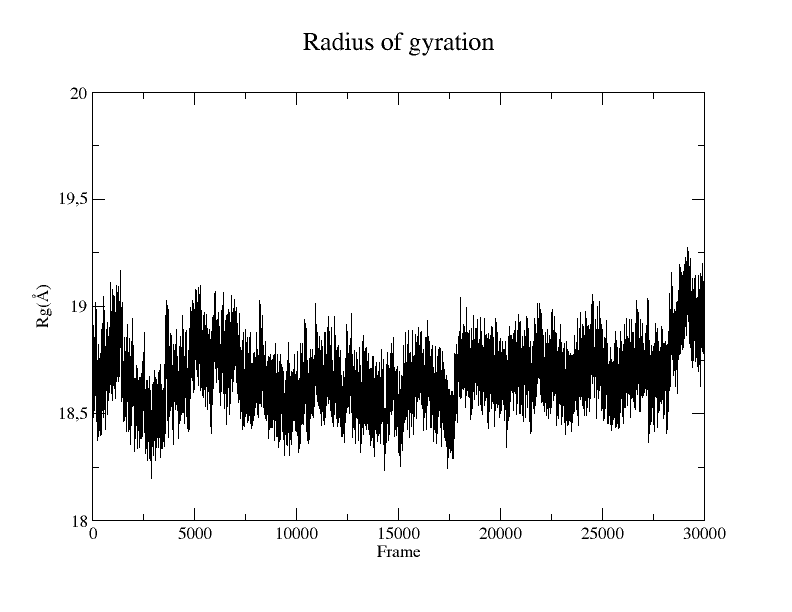
Figure 6. Rg plot of the protein from the SIRAH CG simulation using the Xmgrace program.
Tip
The file rgyr_protein.dat is compatible with external plotting programs.
SASA
The Solvent-Accessible Surface Area (SASA) refers to the measurement of the surface area of a biomolecular structure that can be reached by solvent molecules. The SASA can be defined as the range to which the atoms on the surface of a protein form contacts with the solvent. Although there are a number of algorithms and computational tools available for estimating the SASA, you can conduct the estimation using a simple Tcl script within the Tk Console.
Thus, you can create a sasa.tcl file to calculate SASA of your protein and output a text file SASA_protein_nobackbone.dat:
#set output file name
set output [open "SASA_protein_nobackbone.dat" w]
#select only solvent-accessible points that are not the backbone
set sel [atomselect top "not name GN GC GO"]
#select the protein
set protein [atomselect top "sirah_protein"]
#get the number of frames
set n [molinfo top get numframes]
#sasa calculation loop
for {set i 0} {$i < $n} {incr i} {
#get the correct frame
molinfo top set frame $i
#calculate sasa assigning a sphere radius of 2.1 to not backbone atoms
set sasa [measure sasa 2.1 $protein -restrict $sel]
#print to screen frame/total number of frames
puts "\t \t progress: $i/$n"
#print to file the sasa
puts $output "$sasa"
}
puts "\t \t progress: $n/$n"
puts "Done."
close $output
Note
The probe radius is set at 2.1 Å as it corresponds to the radius of a WT4 bead.
Tip
You can restrict your selection to a particular residue or region by modifying the set sel [atomselect top "not name GN GC GO"] line.
With the sasa.tcl file in your work directory, go to Extensions > Tk Console and enter:
source sasa.tcl
You can plot the result using Xmgrace, and a plot similar to Figure 7 will appear:
xmgrace SASA_protein_nobackbone.dat
{kind=link}
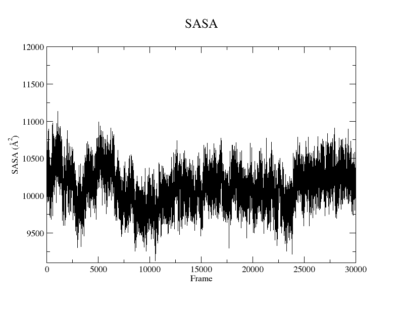
Figure 7. SASA plot of the protein without the backbone atoms from the SIRAH CG simulation using the Xmgrace program.
Tip
The files SASA_protein_nobackbone.dat is compatible with external plotting programs.
VMD in text mode
If you need to perform non-interactive analysis on large trajectories or if a graphical user interface is not available, you can also execute the scripts described here using VMD text mode. When in text mode, VMD does not provide a window for graphical output, but many of its features are available. To launch VMD in text mode, the -dispdev text and -f flags are appended to the command line used before to load the trajectory, as shown below:
vmd -dispdev text -f ../5YWS_cg.psf 5YWS_cg_md_pbc.xtc -e ../sirah.ff/tools/sirah_vmdtk.tcl
The output will be similar to the following:
Info) VMD for LINUXAMD64, version 1.9.3 (November 30, 2016)
Info) http://www.ks.uiuc.edu/Research/vmd/
Info) Email questions and bug reports to vmd@ks.uiuc.edu
Info) Please include this reference in published work using VMD:
Info) Humphrey, W., Dalke, A. and Schulten, K., `VMD - Visual
Info) Molecular Dynamics', J. Molec. Graphics 1996, 14.1, 33-38.
Info) -------------------------------------------------------------
Info) Multithreading available, 12 CPUs detected.
Info) CPU features: SSE2 AVX AVX2 FMA
Info) Free system memory: 58GB (93%)
Info) File loading in progress, please wait.
Info) Using plugin psf for structure file 5YWS_cg.psf
psfplugin) WARNING: no impropers defined in PSF file.
psfplugin) no cross-terms defined in PSF file.
Info) Analyzing structure ...
Info) Atoms: 7270
Info) Bonds: 10237
Info) Angles: 4791 Dihedrals: 3727 Impropers: 0 Cross-terms: 0
Info) Bondtypes: 0 Angletypes: 0 Dihedraltypes: 0 Impropertypes: 0
Info) Residues: 1843
Info) Waters: 0
Info) Segments: 4
Info) Fragments: 1592 Protein: 0 Nucleic: 0
Info) Using plugin xtc for coordinates from file 5YWS_cg_md_pbc.xtc
Info) Coordinate I/O rate 1564.4 frames/sec, 129 MB/sec, 19.2 sec
Info) Finished with coordinate file 5YWS_cg_md1_pbc.xtc.
SIRAH radii were set
SIRAH selection macros were set
SIRAH coloring mothods were set
SIRAH Tool kit for VMD was loaded. Use sirah_help to access the User Manual pages
vmd >
Attention
The file sirah_vmdtk.tcl is a Tcl script that is part of SIRAH Tools and contains the macros to properly visualize the coarse-grained structures in VMD. These macros will facilite our atom selection within VMD. You can go to the SIRAH Tools tutorial to learn more about the macros.
Thus, in the vmd > prompt, you can import any of the previously displayed Tcl scripts, for instance:
vmd > source rmsd_protein.tcl
Additionally, you can customize the Tcl scripts to include VMD commands to load and process your trajectories in conjunction with launching SIRAH Tools in VMD text mode. For example, you can create a rmsd_protein_dispdev.tcl file:
#Load parameter file
mol new 5YWS_cg.psf
#Load trajectory file
mol addfile 5YWS_cg_md_pbc.xtc waitfor all
#Load SIRAH tools
source sirah.ff/tools/sirah_vmdtk.tcl
#set output file name
set outfile [open rmsd_prot.dat w];
#set reference as the first frame using protein backbone as selection
set reference [atomselect top "sirah_backbone and sirah_protein" frame 0]
#set trajectory selection also as the protein backbone
set compare [atomselect top "sirah_backbone and sirah_protein"]
#get the number of frames
set N [molinfo top get numframes]
#calculate RMSD for all frames
for {set i 0} {$i < $N} {incr i} {
#get the correct frame
$compare frame $i
#do the alignment
$compare move [measure fit $compare $reference]
#compute the RMSD
set rmsd [measure rmsd $compare $reference]
#print the RMSD in the output file
puts $outfile "$i \t $rmsd"
}
close $outfile
quit
This script will load the topology 5YWS_cg.psf, the trajectory 5YWS_cg_md_pbc.xtc, and sirah_vmdtk.tcl files. Then, align the protein according to the first frame of the trajectory, calculate the RMSD, and create an output file with the name rmsd_prot.dat. With the quit command, VMD is closed. To read the script, you type:
vmd -dispdev text -e rmsd_protein_dispdev.tcl
Important
You can create multiple selections for RMSD, RMSF, Rg, or SASA within a single Tcl script to perform all analyses and output multiple result files.